Rendered by PhoneBarLayoutTest, PhoneAccountRenderTest, TvAccountMenuTest (app render tests, no device) and the desktop NavBarAccountTest. Dark theme. The phone's bar keeps its structure: Home, Chats, Search and Downloads in one pill, the picture at the top end. A bottom sheet is a window the render tests cannot photograph, so its content is drawn on its own.
What changed
Bar: one caption size for all four items (12 sp, or 11 or 10 sp for all four when the longest word does not fit, icons only below that), one icon size and gap, four slots of one width, more room round them. Tested at 360 and 320 dp, on its side, a tablet, 1.3 and 2 times the font.
Picture: one instance owned by the shell, over every bar page, so it never moves or blinks as pages change or Home and Chats are swiped (frames: at rest, mid swipe, after Chats, Downloads and a list page).
Account menu: header (picture, name, @handle, Refresh, the switcher with two profiles or more), three tiles (Favourites, History, Watch later) with the old viewing counts on them, two rows (Settings, Add or switch account), the version (tile and v1.28.7). A bottom sheet on a phone, an anchored card beside a rail and on the desktop, a right side sheet on the television. Sign out is in Settings, Account on every device.
Television: the picture alone in the top bar (the name is its label), the tabs spaced evenly.
Bar
360 dp
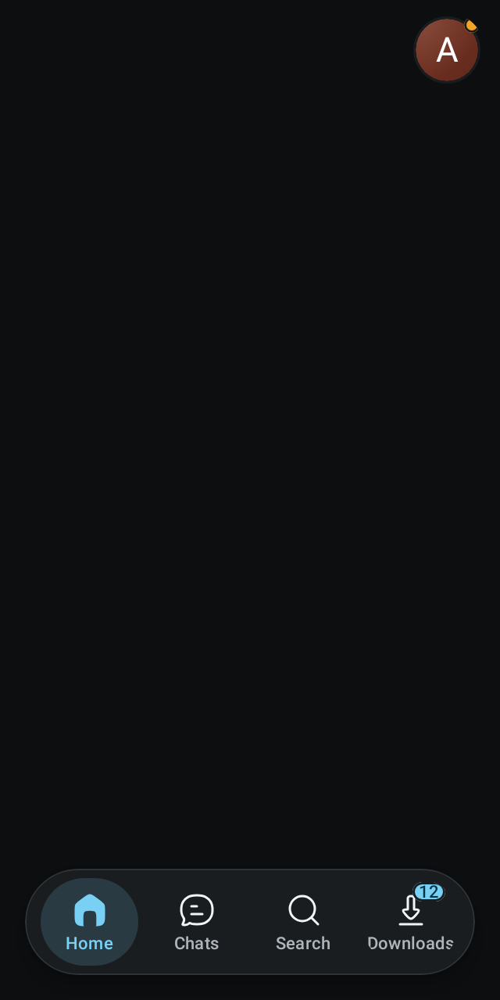
320 dp, 12 downloadsfont 1.3font 2
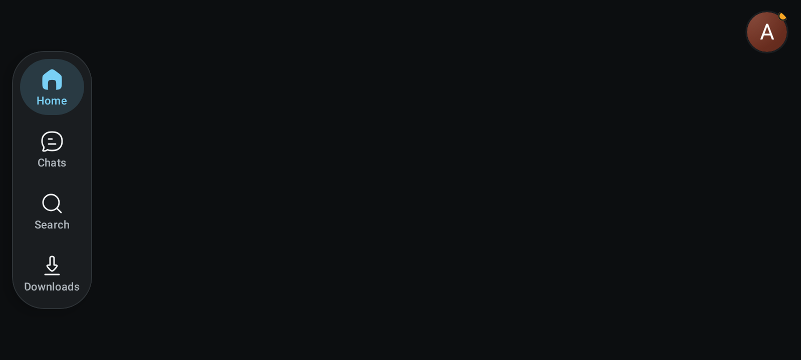
on its side (rail)
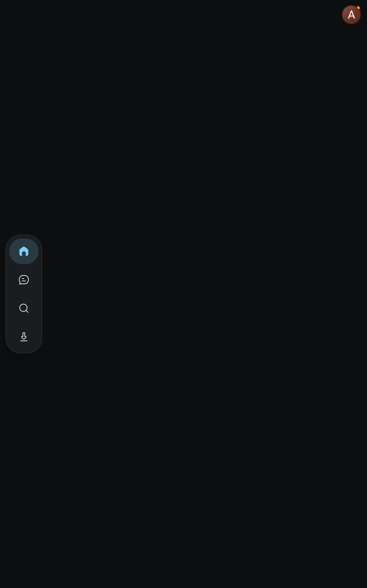
tablet (rail), font 1.3
The picture while pages change
Home at rest
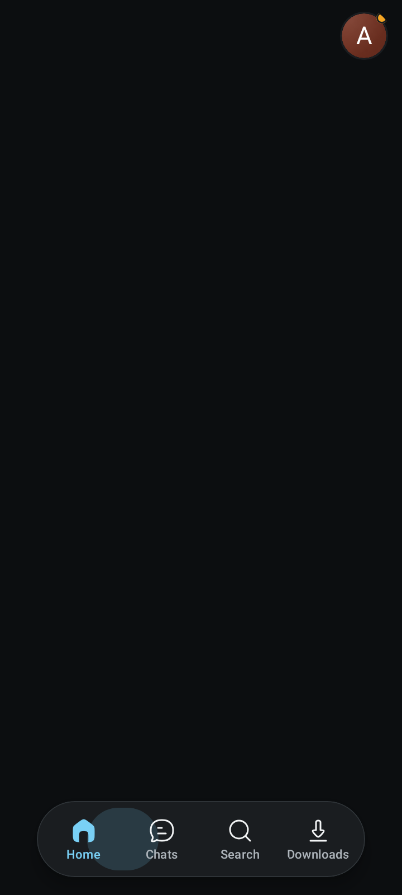
mid swipe: the highlight half way, the picture where it was
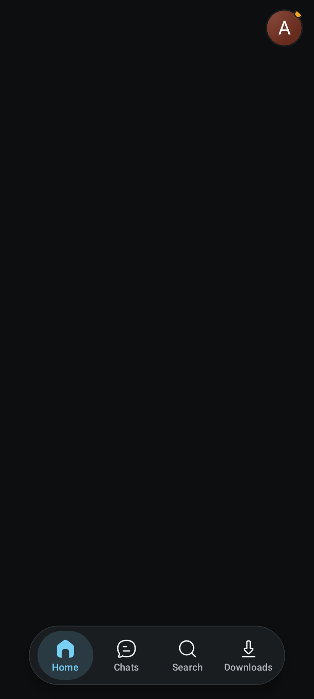
after Chats, Downloads and a list page
The phone's sheet content
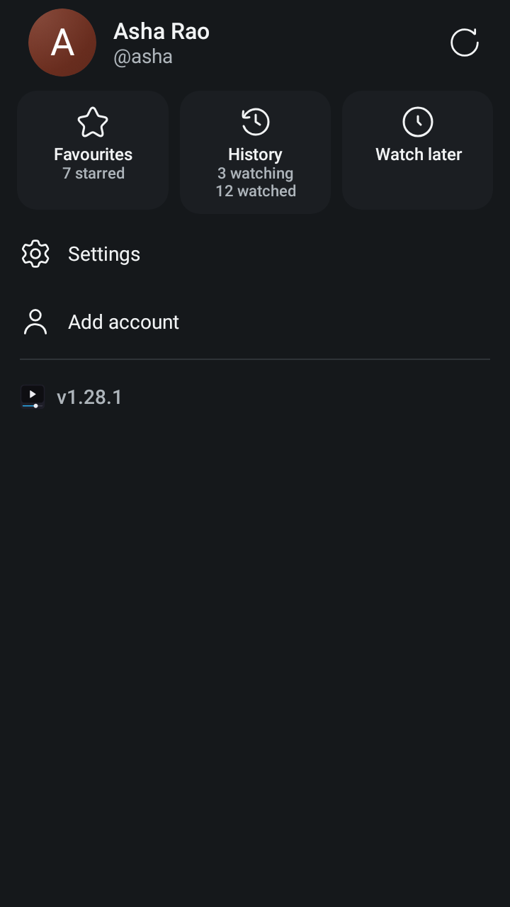
360 x 640, one profile
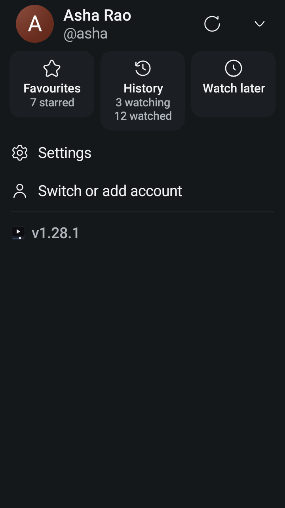
1.3 times the font, two profiles
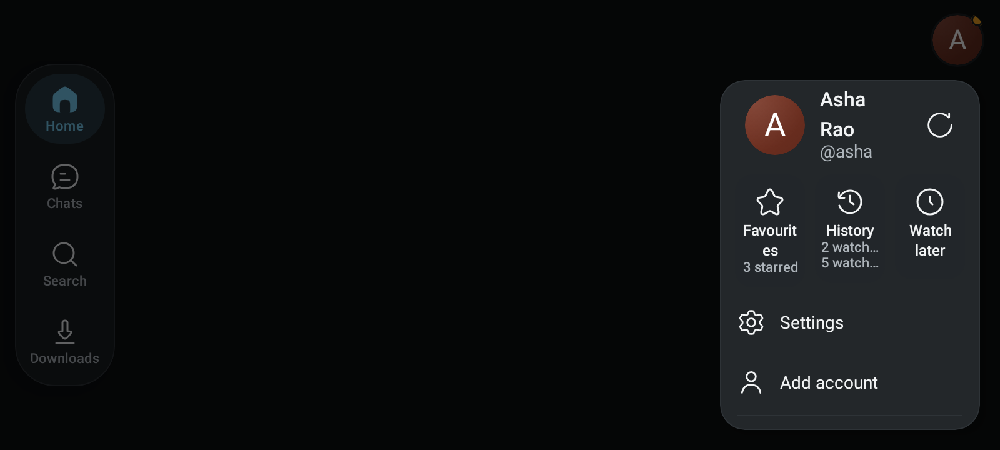
on its side: the card
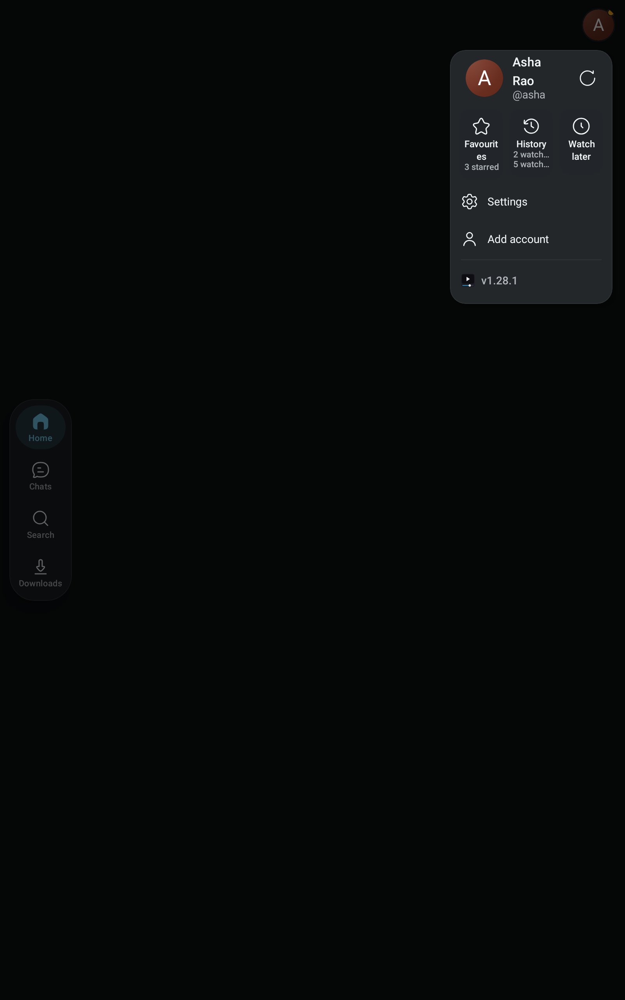
tablet: the card
Desktop
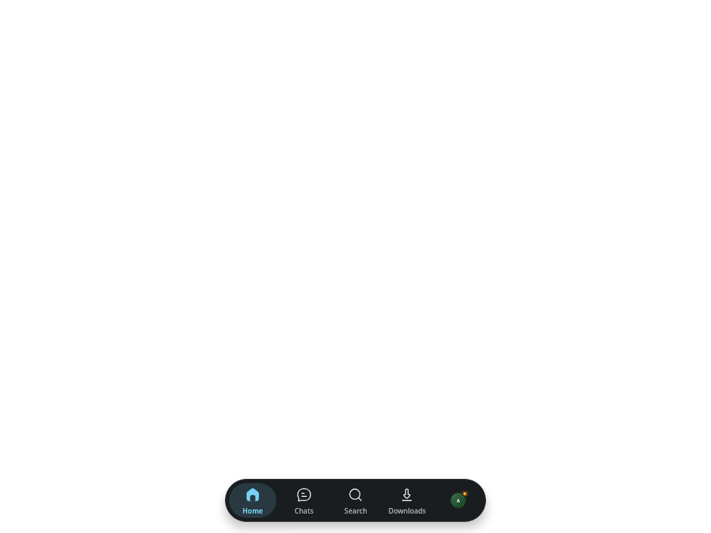
bar with a 60 character name: the picture alone
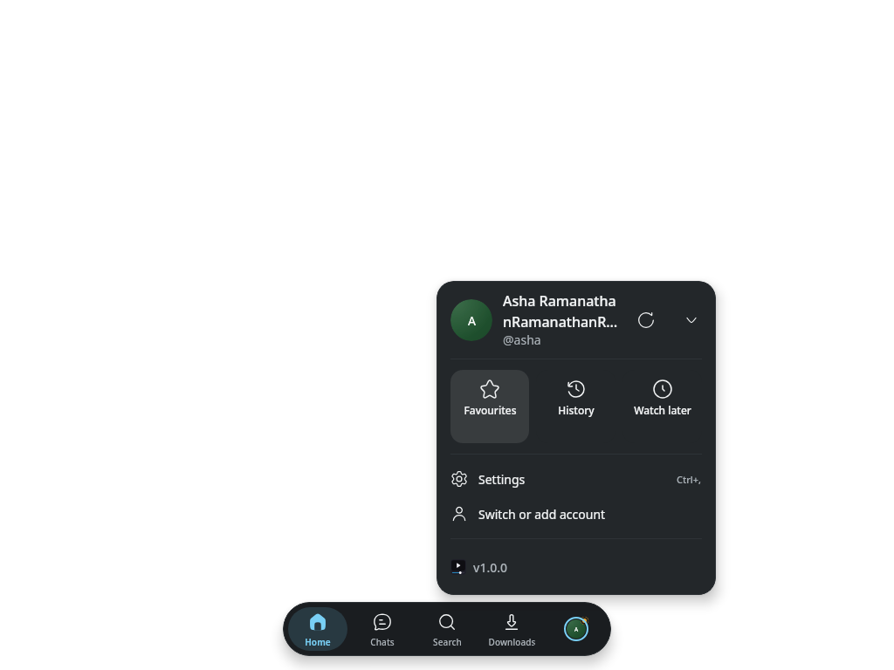
the popover, 320 dp, with the long name in its header
Television
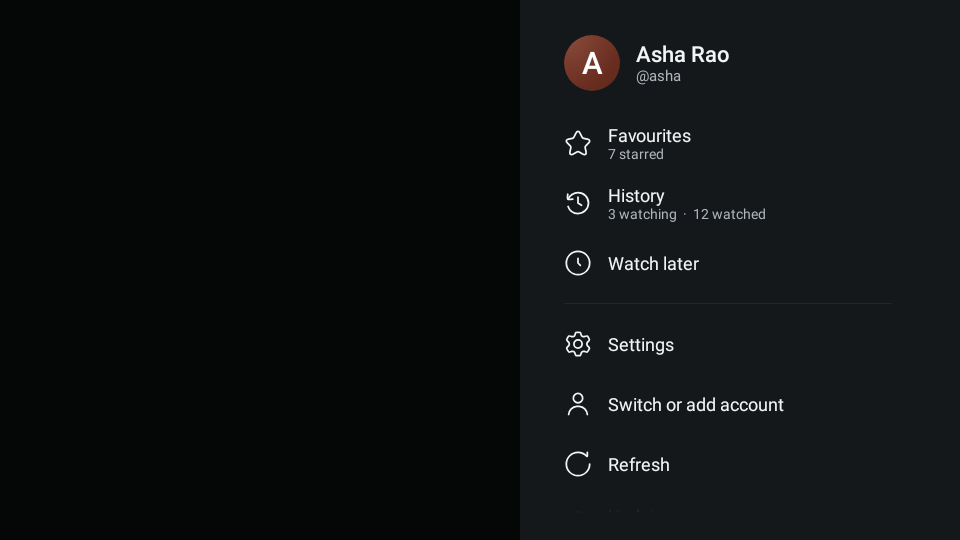
sheet, 960 x 540 (the column scrolls, a fade at the cut)
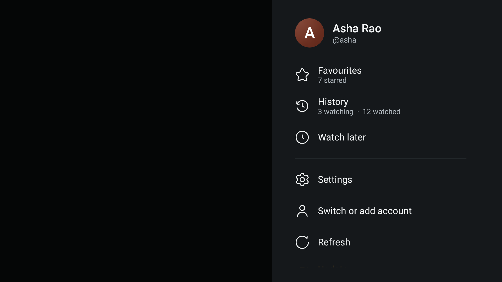
sheet, 1920 x 1080
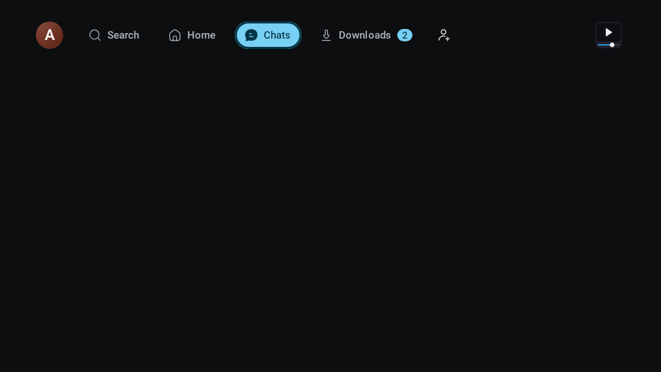
top bar, 960 x 540: the picture alonetop bar with the longest name: no text for it